Identity · 2026
A research studio at night.
Merlark reads a creator’s work the way a researcher reads an archive: patiently, with the source always at hand. The identity is dark and quiet, lit only where something has been found.
Symbol
A wing of three feathers sweeping up and to the right, with one amber signal just ahead of its tip: the creator’s work in motion, and the moment worth a second look. Below 24 px it switches to a two-feather cut with a larger signal.


Wordmark and lockups
The wordmark is set in Instrument Serif and drawn as outlines, tracked open by 5.5% so it holds its rhythm at small sizes. It sits on the symbol’s lower edge, at 42% of the symbol’s height.
 Wordmark alone
Wordmark alone- Keep the signal amber in colour versions; in one-colour use it takes the ink.
- Never outline, rotate, add gradients to, or re-space the mark.
- Clear space on every side: the height of the signal’s distance from the wing tip, doubled.
Palette
Charcoal, petrol and ivory carry every page. Amber is reserved for discoveries, focal points and the one action that matters. Sea-green draws the analytical connections between things.
- Ink charcoal
#080C0DGround - Deep petrol
#0C2228Depth, surfaces - Warm ivory
#F3EBDCText, the mark - Amber
#D9A565Discovery, key action - Sea-green
#78B8A6Connections, observed data - Parchment
#BEAC8CHistorical estimates
Typography
Map-first openings are finding their audience.
Instrument Serif · headlines, findings, numerals that matter · SIL Open Font License, self-hostedEight long-form uploads open on an animated route map within the first ten seconds. In this range they averaged 29,450 views in their first 7 days.
Inter · interface and reading text · SIL Open Font License, self-hostedImagery
The demo’s fictional channel, Lanternfish Histories, has its own painted thumbnails: maritime and exploration history in the same petrol, ink and lamp-amber light. They were generated for this demo with GPT Image and contain no text. The atmosphere behind every page is a generated light field with no text, animated in code with flowing ribbons and travelling signals.
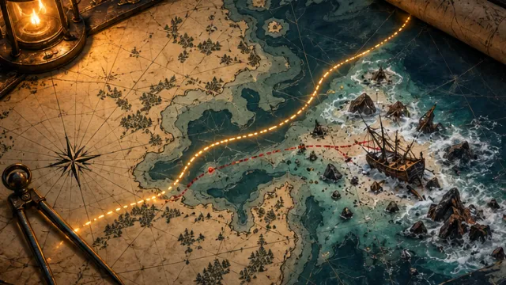
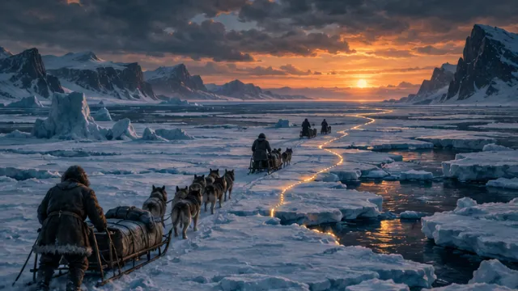
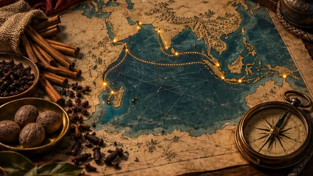
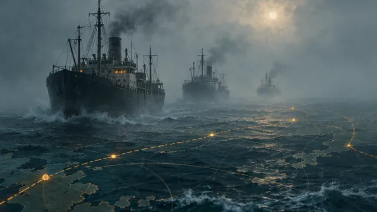
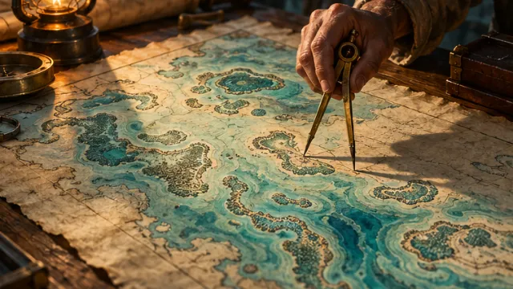
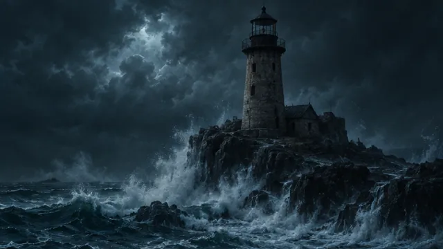
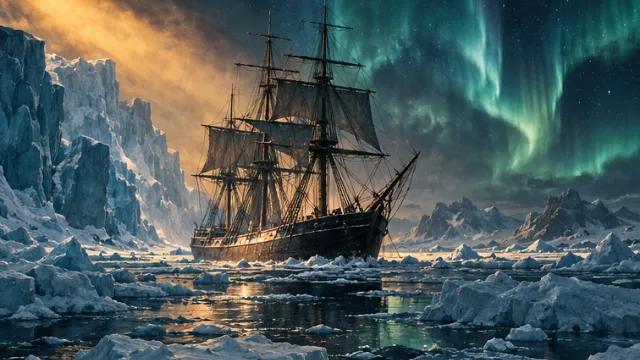
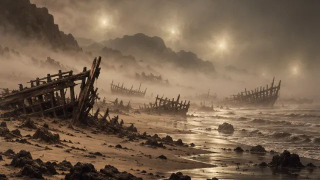
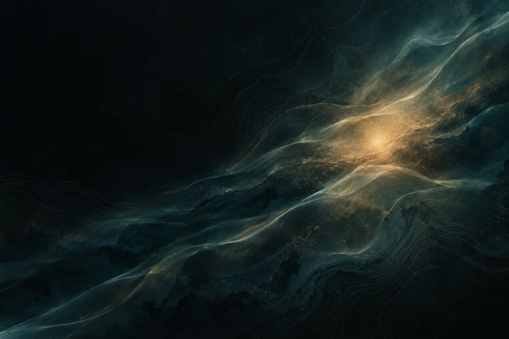
In use
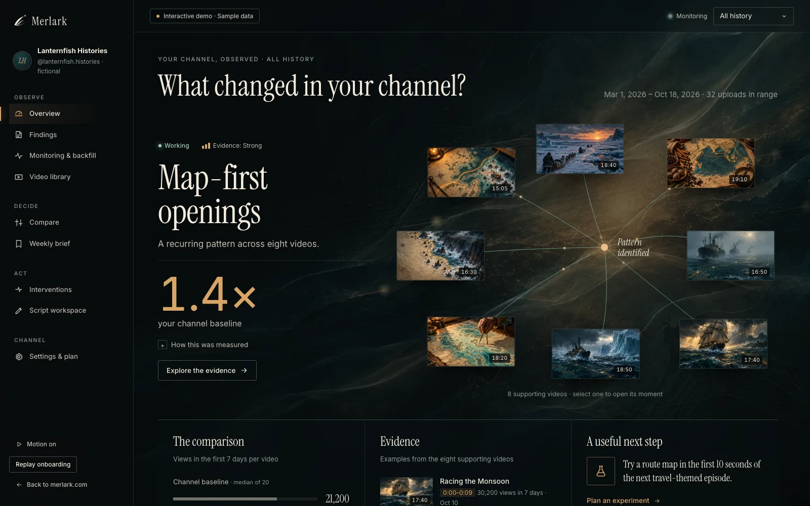
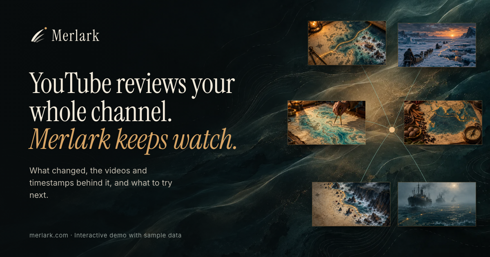
Motion
- Light moves, type stays. Ribbons, signals and image layers carry the movement; headlines and reading text never scale or drift.
- Curves, not lines. Elements travel on curved paths with their own phase, so nothing arrives in lockstep.
- Scroll is the timeline. The landing story follows native scrolling and reverses exactly when scrolled back.
- Timing. Press 150 ms · panels 350–600 ms · analytical emphasis 700–1200 ms · ambient cycles 15–60 s.
- Respect stillness. Reduced-motion settings and the site’s motion switch stop every ambient layer; hidden tabs pause.